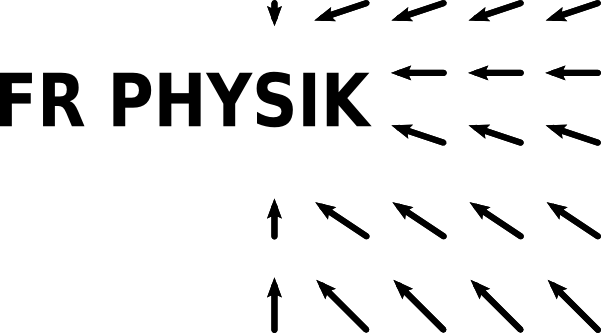
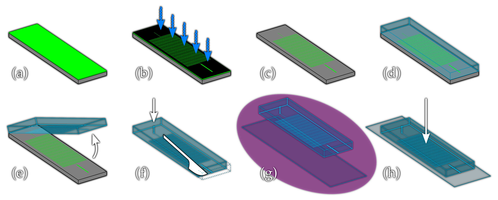
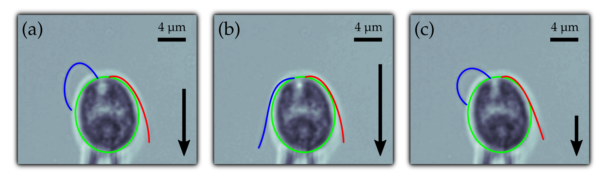

On the synchronisation of
Chlamydomonas reinhardtii's eukaryotic flagella
Chlamydomonas reinhardtii's eukaryotic flagella
Christian Ruloff
|  |

|
From the beating of a single flagellum...
|
https://www.youtube.com/watch?v=Gs7ku8xA5so
|
||

|
https://www.youtube.com/watch?v=j3CuqRDGPmU
|
|
...to metachronal waves
Swimming in the viscous regime is a tough job
|
Movies by Diego Saenz and Patrick Underhill at the University of Wisconsin-Madison
|
|
The eukaryotic flagellum:
a very complex machine on a very small scale
a very complex machine on a very small scale
|
|

https://commons.wikimedia.org/wiki/File:Eukaryotic_cilium_diagram_en.svg (modified)
How does it perform under load?
Long-term cultivation...
(an agar-solidified TAP medium)
(an agar-solidified TAP medium)

...and remobilisation
(in liquid TAP medium) |
Separating a good from a bad culture

|
How to design a microfluidics chip?
|
Kirchhoff's circuit laws
Hagen-Poiseuille's law
|
||||||||
How to calculate the hydraulic resistance?

|
|
$u_x\left(y, z\right) = \Delta p\,\frac{4h^2}{\pi^3\mu l}\sum\limits_{\textrm{n, odd}}^\infty\frac{1}{n^3}\left[1 - \frac{\cosh\left(\frac{n\pi y}{h}\right)}{\cosh\left(\frac{n\pi w}{2h}\right)}\right]\sin\left(\frac{n\pi z}{h}\right)$
$Q = 2\int\limits_0^\frac{w}{2}\int\limits_0^h u_x\left(y, z\right)\mathrm{d}y\,\mathrm{d}x = \Delta p\,\frac{w h^3}{12\mu l}\left[1 - \sum\limits_{\textrm{n, odd}}^\infty\frac{192}{\left(n\pi\right)^5}\frac{h}{w}\tanh\left(\frac{n\pi}{2}\frac{w}{h}\right)\right] = \frac{\Delta p}{R}$
|
How to calculate the peak velocity?
|
|
|
$\bar{u}_j = Q\cdot\frac{1}{w_j\,h_j} = \frac{\Delta p}{\sum\limits_j R_j}\cdot\frac{1}{w_j\,h_j}$
$u^{max}_j = \bar{u}_j\left(\frac{s + 1}{s}\cdot\frac{r + 1}{r}\right)$
with $s\approx 1.7 + \frac{\epsilon_j^{1.4}}{2}$, $r\approx\begin{cases} 2 & \textrm{if }\epsilon_j\geq3\\ 2 + 0.3\left[\epsilon_j^{-1}-\frac{1}{3}\right] & \textrm{if }\epsilon_j<3\end{cases}$, and $\epsilon_j = w_j\,/\, h_j$
|
Microfluidics parameter
| type | length (mm) | width (µm) | height (µm) | resistence (mPa s / µl) |
| pre-resistor channel | ||||
| design | 704.65 | 50.00 | 50.00 | − |
| chip A | − (<4%) | 48 ± 2% | 52 ± 4% | 3 ± 9% |
| chip B | − (<4%) | 56 ± 4% | 50 ± 1% | 3 ± 6% |
| chip C | − (<4%) | 58 ± 2% | 52 ± 4% | 2 ± 12% |
| sample channel | ||||
| design | 3.50 | 200.00 | 50.00 | − |
| chip A | − (<4%) | 206 ± 1% | 52 ± 4% | 0.002 ± 12% |
| chip B | − (<4%) | 215 ± 1% | 50 ± 1% | 0.002 ± 4% |
| chip C | − (<4%) | 215 ± 1% | 52 ± 4% | 0.002 ± 12% |
Stokes equations for homogeneous, incompressible fluids
|
Navier-Stokes equations
$\rho\cdot\dot{\vec{u}} = \rho\cdot\left(\partial_t\vec{u} + \left(\vec{u}\cdot\vec{\nabla}\right)\cdot\vec{u}\right) = \vec{f}_{\textrm{external}} - \vec{\nabla} p + \mu\Delta\vec{u}$
and
$\vec\nabla\vec{u} = 0$
low Reynolds number regime $\left(\mathcal{R}e = \frac{\rho l u}{\mu} < 2000\right)$, inertia negligible: $\dot{\vec{u}} = \vec{0}$
$ = \vec{0}$ |
How to fabricate a microfluidics chip?
|  |
The flow field is measured using µPIV
|
|
The flow speed depends linearly on the pressure
with negligible batch related deviations
with negligible batch related deviations
The evolution of the desired flow speed is slightly delayed
and more or less pronounced depending on the jump direction
and more or less pronounced depending on the jump direction
The pressure controller is calibrated for high precision measurements

|
Micropipettes
provide strong fixation and reliable orientation
provide strong fixation and reliable orientation
Precise tracking of the cell body
permits reliable cell masking
permits reliable cell masking
High precision flagellar tracking
reveals full dynamics of flagellar beating
reveals full dynamics of flagellar beating

|
Full flagellar length is tracked...

...with only some flagellar points missing
|
We restrict ourselves to high quality data sets
High-dimensional measurement data is reduced to a two-dimensional
limit cycle representation
limit cycle representation
|
$Z\left(t\right) = \beta_1\left(t\right) + \textrm{i}\beta_2\left(t\right) = A\left(t\right)\textrm{e}^{\textrm{i}\theta\left(t\right)}$ $\blacktriangleright$ $\hat{Z}\left(\varphi\right) = A\left(\varphi\right)\,e^{\textrm{i}\varphi}$
|
The flagellar load response is characterised by
the amplitude susceptibility $\chi_{A}$ and the phase speed susceptibility $\chi_{\dot{\varphi}}$
the amplitude susceptibility $\chi_{A}$ and the phase speed susceptibility $\chi_{\dot{\varphi}}$

|
A generic theory of flagellar oscillations
is calibrated by means of experiments
is calibrated by means of experiments
|
friction forces $\vec{P}\left(\vec{q}\right) = \left(\Gamma^{(h)} + \Gamma^{(i)}\right)\cdot\dot{\vec{q}}$ $\Gamma^{(i)}_{ky} = \Gamma^{(i)}_{yk} = 0$ with $k,l\in\{\varphi, A\}$
$\Rightarrow\dot{\varphi}_0\left[\begin{array}{lll}
\Gamma^{\left(h\right)}_{\varphi\varphi}\\
\Gamma^{\left(h\right)}_{A\varphi}
\end{array}\right]_{\left(\varphi, A_0\right)} - \eta\left[\begin{array}{lll}
\Gamma^{\left(h\right)}_{\varphi y} u\\
\Gamma^{\left(h\right)}_{Ay} u + \kappa_A\Delta A
\end{array}\right]_{\left(\varphi, A\right)} = \left[\dot{\varphi}, \dot{A}\right]\cdot\left[\begin{array}{lll}
\Gamma^{\left(h\right)}_{\varphi\varphi} & \Gamma^{\left(h\right)}_{\varphi A}\\
\Gamma^{\left(h\right)}_{A\varphi} & \Gamma^{\left(h\right)}_{AA}
\end{array}\right]_{\left(\varphi, A\right)}$
|
Phase-dependent active driving forces and
amplitude stiffness
amplitude stiffness
The flagellar load response
is highly phase-dependent
is highly phase-dependent
|
|
Comparison of flagellar efficiencies
| efficiency | beating frequency | cell type | reference |
| 0.1 | 40 | Paramecium caudatum | [61] |
| 0.15 - 0.35 | 8 | mammalian sperm (rat, mouse) | [25] |
| 0.21 | 50 | C. reinhardtii (SAG 11-32c mt-) | [64] |
| 0.4 | 30 | Tetrahymena pyriformis | [11] |
Two dynamic modes of beating for positive load...
(chiral and tremor-like beating)
(chiral and tremor-like beating)
...which do not exist for negative load
Dynamics of the proximal end of the flagella

|
Theoretical frequency response
Frequency response of the flagellar beat to positive load
reveals dynamic beating modes and shows hysteresis
reveals dynamic beating modes and shows hysteresis

|
Frequency response of the flagellar beat to positive load
reveals dynamic beating modes and shows hysteresis
reveals dynamic beating modes and shows hysteresis
|
|
Frequency response of the flagellar beat to positive load
reveals dynamic beating modes and shows hysteresis
reveals dynamic beating modes and shows hysteresis

|
Frequency response of the flagellar beat to negative load
shows only slight hysteresis
shows only slight hysteresis

|
Frequency response of the flagellar beat to negative load
shows only slight hysteresis
shows only slight hysteresis

|
Stalling velocities
are different for cis- and trans-flagellum
are different for cis- and trans-flagellum
|
|
The flagellar load response shows hysteresis

|
The flagellar load response is sensitive to the load direction
|
|
Manifold response of cis- and trans-flagellum
to increasing external load
to increasing external load

|
Delayed response of cis- and trans-flagellum
to decreasing external load
to decreasing external load

|
Flagellar stalling shapes are dynamic
and identical for cis- and trans-flagellum
and identical for cis- and trans-flagellum
Strong bending suppresses flagellar oscillations
|  |
Flagellar synchronisation: How does it actually work?
|
https://www.youtube.com/watch?v=5v5eBf2KwF8

|
Dynamics of the phase difference $\delta$

$\dot{\delta} = -\frac{1}{f_0}\lambda\sin\left(\delta\right)\quad$(Adler equation)
|
Tilted washboard potential

|
Distance-dependent phase coherence
reveals relatively short range hydrodynamic influence
reveals relatively short range hydrodynamic influence
In-phase synchronisation of the flagellar beat
depends on the applied load
depends on the applied load

|
|
Phase-dependent flagellar load response

|
Frequency response of the flagellar beat reveals hysteresis and dynamic modes

|
|
Dynamic beating modes are more or less pronounced for cis- and trans-flagellum


|
Stable but flow dependent in-phase synchronisation

|
Outlook
|
Flow-dependent distance of basal bodies

|
Thank you for your attention! Questions?